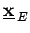
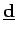
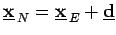
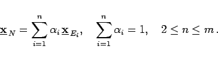

Evolutionsstrategien sind dem Vorbild der natürlichen Evolution nachgebildete stochastische Optimierungsverfahren. Sie beruhen auf den Prinzipien Mutation, Rekombination und Selektion.
Aus einem Elternpunkt  wird durch eine zufällige Variation  ein Nachkomme  gebildet. Mit einer normalverteilten Variation sind kleine Änderungen wahrscheinlich, große Abweichungen treten dagegen nur selten auf.
Aus einer Population von m Eltern können Nachkommen durch Mischen der Informationen zweier oder mehrerer zufällig ausgewählter Eltern gebildet werden. Ein Nachkomme kann dabei z.B. aus dem gewichteten Mittel von n Eltern gebildet werden:
|  | (18.86) |
Anhand eines Vergleiches der Zielfunktionswerte f(x) werden der oder die besten Punkte für die nachfolgende Generation ausgewählt.
Die Evolutionsstrategien werden bezüglich der Anzahl der Eltern und Nachkommen, der Anzahl der an der Rekobination beteiligten Eltern sowie der Vorschriften für Mutation und Selektion klassifiziert. Nähreses dazu findet man in Lit. 18.9.